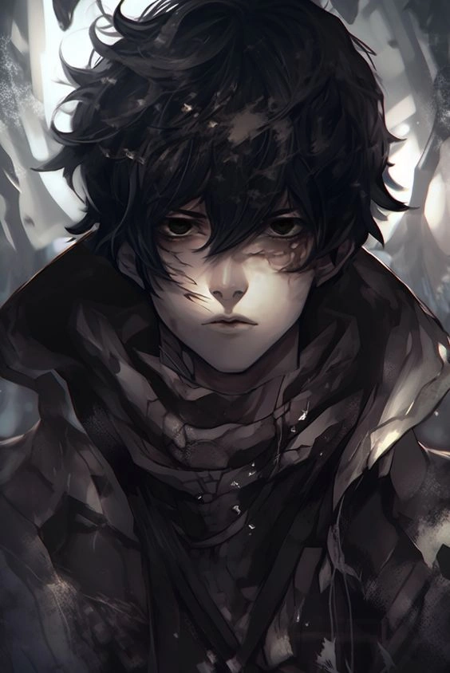

Nome
Sunless
Endereço
Forgotten shore, Ruined cathedral
000 Dream realm
Número de telefone
963000121
Email
sunny.sunless@gmail.com
Nephis
Um caçador de bestas no Dream Realm e o primeio humano(junto com a Nephis) a atingir Supremacia natural, sem influencia do Nightmare spell. Matou o Supremo Anvil da casa se Valor enquanto Nephis matou a Suprema Ki Song da casa de Song